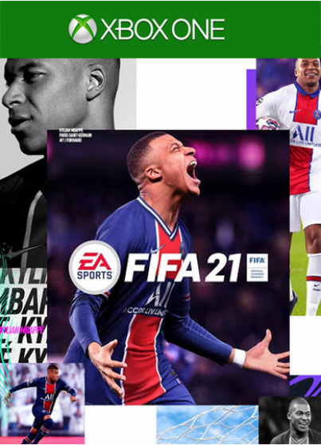
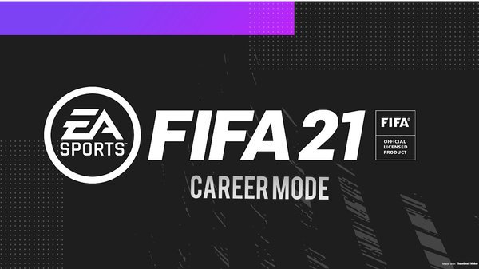

FIFA
FIFA
2021
A koronavírus-járvány alaposan kiszúrt a futballrajongókkal, akiknek így a játékokban kell keresniük a régi hangulatot.
Telt házas stadionok, pacsizó játékosok és valódi, tízezrek torkából szóló szurkolói nóták. Nem hittük volna, hogy valaha is ezek lesznek a legszokatlanabb dolgok egy FIFA-játékban, és sajnos nincs is ebben semmi mulatságos, hiszen – ahogy a komplett sportvilág – a futball is jelentősen átalakult a járvány következtében. De pont ezért jó, hogy itt vannak nekünk a videójátékok, ahova bármikor elmenekülhetünk a világ gondjai elől – így nézve a FIFA sem töltött be még soha ilyen fontos szerepet, hiszen általa olyan élményekben lehet részünk, melyekre az elmúlt hónapokban sem élőben, sem a tévé képernyőjén keresztül nem volt lehetőségünk.
|  |  |
 |
|---|
Az idei FIFA tehát bizonyos értelemben kicsivel több egy újabb sorszámnál. De joggal merül fel a kérdés (ahogyan minden egyes évben): mekkora a tényleges újdonságfaktor? Nos, ha nagy vonalakban vizsgáljuk a játékot, akkor az látszik, hogy az EA Sports igazi újítást nem nagyon tartogatott az idei évre. A jó hír ugyanakkor az, hogy szinte mindegyik játékmódban találunk kisebb-nagyobb finomításokat, így hiába van kicsit újracsomagolt állaga a FIFA 21-nek, abban szerencsére nem lehet kétségünk, hogy egy jobb játékkal állunk szemben, mint a tavalyi rész.
Játékmenet
Az alap játékmenetet tekintve a legfontosabb finomítás talán az, hogy kicsivel több beleszólásunk van a gép által irányított csapattársaink mozgásába, ha ugyanis a megfelelő pillanatban pöccintjük meg a jobb analóg kart, akkor megadhatjuk, hogy melyik irányba fussanak. Ezt pedig érdemes is begyakorolni, az idei részben ugyanis egyértelműen hatékonyabbá vált az üres területek bejátszása, köszönhető részben annak is, hogy a labdavezetés során még precízebben mozoghatunk az R1/RB gombbal, aminek az 1-1 elleni szituációkban vehetjük hasznát. Készüljünk fel ugyanakkor arra, hogy ezáltal a védekezés is nehezebbé válik – főleg úgy, hogy minden eddiginél nehezebb közel kerülni a támadókhoz. Ez azonban egyáltalán nem negatívum, a FIFA 21 ugyanis sokkal inkább ösztönöz bennünket arra, hogy cselekedjünk, a kivárás és a hátrálás kevésbé hatékony – aki művészetként tekint a védekezésre, az most tényleg elmerülhet a mélységeiben, és valódi mesterévé válhat.
 |
 |
|---|
Azért nem mindennel voltunk maradéktalanul elégedettek. A játékosok például még mindig képesek bohózatba illő összegabalyodásokat produkálni, amikor közel kerülnek egymáshoz, és bár a tényleges csetlés-botlásból idén talán kevesebb van, azért így is vannak olyan pillanatai a FIFA 21-nek, amikor előjön a szekunder szégyen. Emellett a labda mozgása még mindig nem az igazi: van, amikor flippergolyóként pattog a játékosok között, máskor egy lufi dinamizmusával száll, ami azért jócskán rontani tudja az összképet – ez bizony továbbra is egy olyan elem, amit a rivális széria sokkal jobban csinál. Mindent egybevetve azonban szerencsére nincs nagy gond: kicsit talán lehetne minden dinamikusabb, de összességében a FIFA 21 továbbra is szórakoztató és könnyen tanulható módon virtualizálja a futballt, emellett a kellő mélységei is megvannak.
Játékmódok

A játékmódok közül a tavaly debütált Volta az, amely kifejezetten sokat bővült, erre pedig valljuk be, szükség is volt, hiszen a FIFA 20-ban igencsak kezdetleges volt ez a szekció. Az utcai foci világába egy nagyjából kétórás sztori mód vezet be minket, melyben Kaká személyében egy valódi sztár is vendégszerepel, de természetesen kötetlenül is lehet játszani, méghozzá még több helyszínen és még változatosabb körülmények között, mint eddig. De ami ennél fontosabb, hogy a Volta Squads menüpontban végre a haverokkal is összeállhatunk, kooperatív felállásban nyomva a cseleket, míg a Featured Battles extra jutalmakat kínál felszerelések és sztárjátékosok képében.

A karrier szintén kibővült, egy interaktív mérkőzésszimulációs menüpontot letéve az asztalra, mely a Football Manager-játékokat idézi meg. A különbség az, hogy a kulcspillanatokban (például a pontrugásoknál) itt akár az irányítást is átvehetjük, így nem kell teljes egészében a szimulációra törekedni – illetve, ha így is teszünk, nemcsak egy szimpla végeredményt kapunk, hanem végigkövethetjük a mérkőzés menetét, főbb mozzanatait. Akad emellett néhány egyéb újítás is. Jobban belefolyhatunk például a játékosok fejlődésébe az erősségeket és a posztokat tekintve, de megnőtt az edzések szerepe is, ahol játékosaink élességét növelhetjük, ami alapjaiban határozza meg, mennyire teljesítenek jól a meccseken.

Végül, de nem utolsósorban, nem mehetünk el szó nélkül az EA Sports aranytojást tojó tyúkja, a FUT, vagyis a FIFA Ultimate Team mellett sem, amely szintén átesett néhány finomításon. Itt is van már például kooperatív játéklehetőség, de aki inkább a külsőségekre ad, az is örülhet, hiszen már a stadionunkat is testreszabhatjuk az egyes páholyokon, zenéken, szurkolói nótákon és különféle látványelemeken keresztül. Történt némi áramvonalasítás is, a játékon belül és kívül egyaránt. Maguk a mérkőzések pörgősebbek, rövidebb megszakításokkal, de a menedzselés is könnyebbé vált, ugyanis nem kell többé szöszölni a játékosok állóképességével, ami valljuk be, senkinek nem fog hiányozni. A lényeg, vagyis a kártyabontogatós koncepció persze fikarcnyit sem változott, így akinek sokkal inkább elvi problémái vannak a FIFA Ultimate Teammel, azok most sem fogják jobban megkedvelni, mert bár továbbra is vígan el lehet lenni vele extra ráfordítás nélkül, a loot box-mechanikából adódó pay-to-win jelleg azért még mindig kőkeményen jelen van.
Hogy a látvány tekintetében hol van a FIFA 21 maximuma, az valamivel később, a következő generációs konzolok megjelenésekor fog csak kiderülni, hiszen PS5-ön és Xbox Series platformokon az ígéretek szerint még kidolgozottabb grafikára számíthatunk. És hát valljuk be, meg is érett már a FIFA erre, mert bár vannak játékosok, akik tényleg döbbenetesen jól ki vannak dolgozva, az ellenkező eset már igencsak illúzióromboló tud lenni, és összességében is kicsit élettelen benyomása van néha a képernyőn látottaknak. Félreértés ne essék: a FIFA 21 cseppet sem néz ki rosszul, még a jelenlegi generáción sem, de mostanra azért megérett már egy ráncfelvarrásra.
Összegezve azt mondhatjuk tehát, hogy aki az igazi újdonságot keresi a FIFA 21-ben, az csalódni fog, az EA Sports ugyanis az új feature-ök és innovációk helyett sokkal inkább a meglévő lyukak betömködésére és az apróbb finomításokra fókuszált. Szomorkodásra azonban nincs okunk, mert bár az idei résznek is megvannak az ilyenkor megszokott gyermekbetegségei (gondolva itt a kisebb bugokra, animációs bakikra vagy éppen hálón keresztülszaladó játékosokra), a nap végén mégiscsak előnyére változott a játék. Az a nagybetűs hangulat pedig, amit a hangorkán és a teli stadionok biztosítanak, sajnos olyasvalami, amit egy darabig még csak így, virtuális formában fogunk megtapasztalni. Így ha másért nem, emiatt érdemes lehet benevezni az idei FIFA-ra.